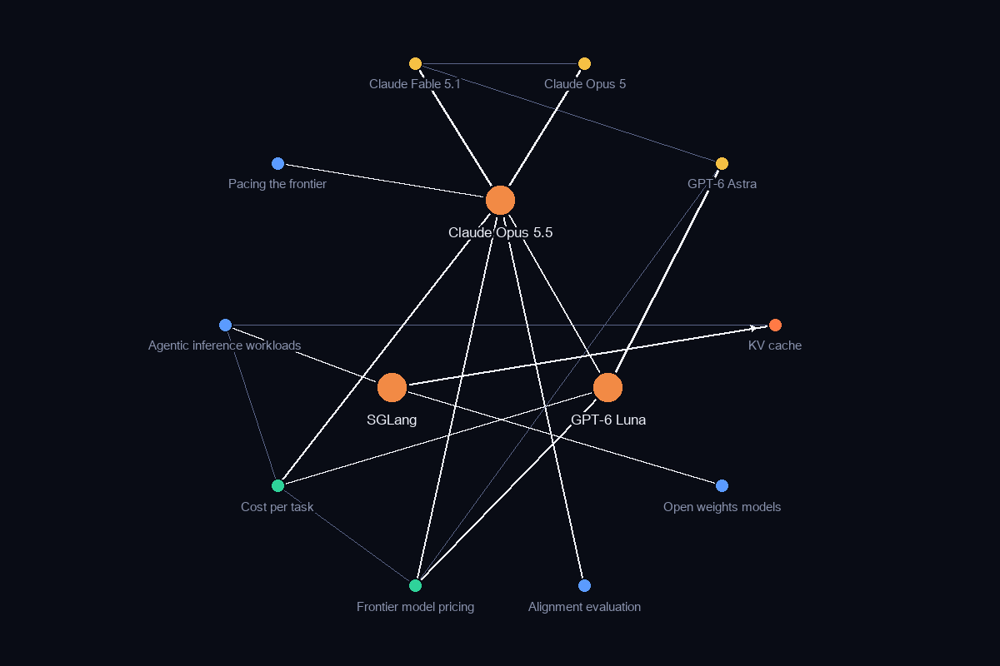

Frontier quality at mid-tier prices
On 22 September the cost of frontier-grade coding fell across two vendors on the same day. Anthropic shipped Claude Opus 5.5 at $4 per million input tokens and $20 output, the first cut in the Opus line after four versions at $5 and $25, with cache reads 60 percent cheaper on top. OpenAI answered with GPT-6 Sol at $2 and GPT-6 Luna at 10 cents, half what Luna's predecessor charged and declared permanent. The practical change for a budget owner is the unit of comparison: list price per token no longer predicts the bill. Cost per task, cache terms and the effort setting do, and the serving engine underneath the chip decides how many of those cheaper tokens a GPU actually produces.
Three terms to know
The most connected additions to the vocabulary this fortnight. Each links to its full explainer; the prerequisites are what to read first if a term is new to you.
Claude Opus 5.5
Opus 5.5 is the model Anthropic released on 22 September 2026 with the pitch that it matches Fable 5.1 on quality while costing about 40 percent less on typical workloads and producing output more than 30 percent faster. The pricing is the headline: $4 per million input tokens and $20 per million output, ending four consecutive Opus versions at $5 and $25, with cache reads cut 60 percent on top.
GPT-6 Luna
GPT-6 Luna is the low-cost member of the GPT-6 line, sitting beneath Sol and Astra. Its release price is half what its GPT-5.6 predecessor charged after that model's own 80 percent cut in July, and OpenAI has said the reduction is permanent rather than promotional. It is also the only model of the 22 September pair that reaches Free and Go users in the desktop app.
SGLang
Serving a model is a software problem as much as a hardware one: batching, cache placement, scheduling and kernel choice determine how many tokens a given accelerator actually produces. SGLang is one of the open engines that does that work, and because it is open it has become a common denominator in published comparisons — configurations are reported as accelerator plus engine, not accelerator alone.
How they sit in the graph
This fortnight’s terms in orange, with the terms they depend on and relate to. Arrows point from a prerequisite to the term that needs it.

How this connects
The two launches sit on the same branch of the graph. Opus 5.5 descends from Claude Opus 5 and Luna sits beneath GPT-6 Astra, and both feed the same two ideas: Frontier model pricing, which they moved, and Cost per task, which is the only fair way to compare them. SGLang is the third term because it explains where the saving is made real. It schedules requests over the KV cache, the memory that dominates long agentic sessions, and published serving economics are now quoted as chip plus engine, never chip alone.
What to research & study next
Open questions the graph raised this fortnight, each anchored on a term you can read up on.
- Does the list cut on Claude Opus 5.5 reduce measured Cost per task by at least 20 percent on agentic runs once cache-read pricing and effort settings are held constant, or does the effort dial dominate the saving?
- Frontier model pricing: whether $4/$20 and $2/$10 hold past the launch window, and whether the scheduled 25 percent November increase on the GPT-5.6 family arrives.
- Token share versus revenue share: whether the frontier tier's share of large-account tokens stays below 45 percent after the cuts, which would confirm that the middle of the market is where the money moved.
- Is the 14 to 21 percent spend recovery claimed for Smart model routing net of the router's own cost, and does the finding that the dearest model is cheaper on long tool-heavy sessions survive the new price sheet?
- Whether prices keep falling faster than GPU rental costs rise. The one number that settles it, Gross margin per GPU-hour, has so far come from a single vendor.